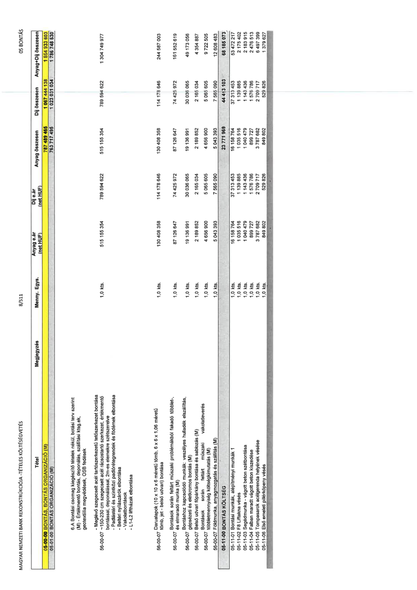

| Tétel | Megjegyzés | Menny. | Egys. | Anyag e.ár (net HUF) | Díj e.ár (net HUF) | Anyag összesen (net HUF) | Díj összesen (net HUF) | Anyag+Díj összesen (net HUF) |
|---|---|---|---|---|---|---|---|---|
| 05-00-00 BONTÁS, BONTÁS ORGANIZÁCIÓ (M) | NaN | NaN | NaN | 0 | 0 | 787 489 465 | 1 067 444 138 | 1 854 933 603 |
| 05-01-00 BONTÁS ORGANIZÁCIÓ (M) | NaN | NaN | NaN | 0 | 0 | 763 717 496 | 1 023 031 034 | 1 786 748 530 |
| 56-00-00 | 6.A Bontási csomag kiegészítő tételek nélkül, botási terv szerint (M) - Értékmentő bontás, deponálás, szállítási ktsg.ek, geotextília megvédések, OSB fedések\n\n- Meglévő zsaluzott acél tartószerkezetű tetőszerkezet bontása - ~150-230 cm vastag tégla boltozat bontása (M) - Értékmentő bontással, deponálással, 2m-es elemekre szétszerelve\n- Padlástéri és szintközi padlórétegrendek és födémek elbontása\n- Beltéri nyílászárók elbontása\n- Vakolatbontások\n- L1-L2 liftházak elbontása | 1,0 | kts | 515 155 354 | 789 594 622 | 515 155 354 | 789 594 622 | 1 304 749 977 |
| 56-00-07 | Darualapok (10 x 10 x 6 méretű tömb, 6 x 6 x 1,06 méretű tömb, jet - belső udvari) bontása | 1,0 | kts | 130 408 358 | 114 178 646 | 130 408 358 | 114 178 646 | 244 587 003 |
| 56-00-07 | Bontások során feltárt műszaki problémákból fakadó többlet-, és elmaradó munka (M) | 1,0 | kts | 87 126 647 | 74 425 972 | 87 126 647 | 74 425 972 | 161 552 619 |
| 56-00-07 | Bontáshoz kapcsolódó munkák, veszélyes hulladék elszállítás, palatető, azbeszt szigetelések bontása (M) | 1,0 | kts | 19 136 991 | 30 036 065 | 19 136 991 | 30 036 065 | 49 173 056 |
| 56-00-07 | Belső udvari főpárkány bontása és sablozás (M) | 1,0 | kts | 2 189 852 | 2 165 034 | 2 189 852 | 2 165 034 | 4 354 887 |
| 56-00-07 | Bontások során feltárt műszaki vakolatleverés többletmennyiség költségkimutatás (M) | 1,0 | kts | 4 656 900 | 5 065 605 | 4 656 900 | 5 065 605 | 9 722 505 |
| 56-00-07 | Földmunka, anyagmozgatás és szállítás (M) | 1,0 | kts | 5 043 393 | 7 565 090 | 5 043 393 | 7 565 090 | 12 608 483 |
| 05-11-00 BONTÁS KÖLTSÉG | NaN | NaN | NaN | 0 | 0 | 23 771 969 | 44 413 103 | 68 185 073 |
| 05-11-01 | Bontási munkák, alépítményi munkák 1 | 1,0 | kts | 16 158 764 | 37 313 453 | 16 158 764 | 37 313 453 | 53 472 217 |
| 05-11-02 | F8 Liftakna vésés | 1,0 | kts | 1 035 516 | 1 139 885 | 1 035 516 | 1 139 885 | 2 175 402 |
| 05-11-03 | Segédmunka - vágott beton szétbontása | 1,0 | kts | 1 040 479 | 1 143 436 | 1 040 479 | 1 143 436 | 2 183 915 |
| 05-11-04 | Falban maradt vágott beton kiszedése | 1,0 | kts | 899 727 | 1 576 786 | 899 727 | 1 576 786 | 2 476 513 |
| 05-11-05 | Tompasarok acélgerenda helyének vésése | 1,0 | kts | 3 787 682 | 2 709 717 | 3 787 682 | 2 709 717 | 6 497 399 |
| 05-11-06 | Első emeleti pillérköpeny vésés | 1,0 | kts | 849 802 | 529 826 | 849 802 | 529 826 | 1 379 627 |
